Tuijo. Per a dos.
Un xat privat que viu només als vostres dos mòbils.

iPhone i Android · català, italià, anglès, castellà
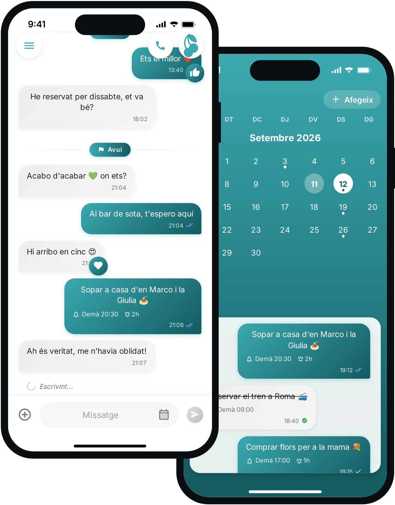
Un xat privat que viu només als vostres dos mòbils.
iPhone i Android · català, italià, anglès, castellà

Cadascú mostra el seu codi i escaneja el de l'altre. Sense correu, sense número de telèfon, sense contrasenya: a partir d'aquí només hi sou vosaltres dos.
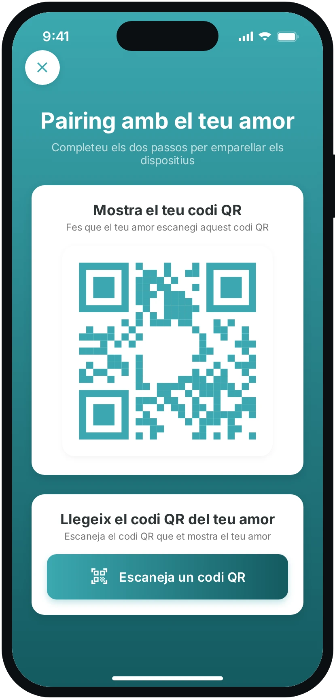
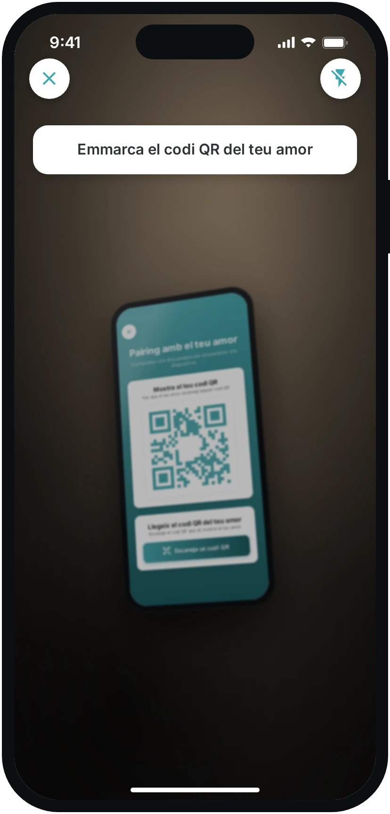
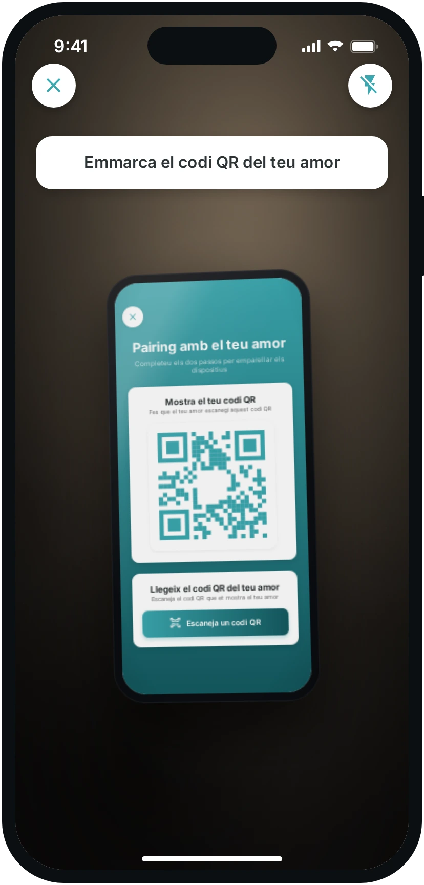
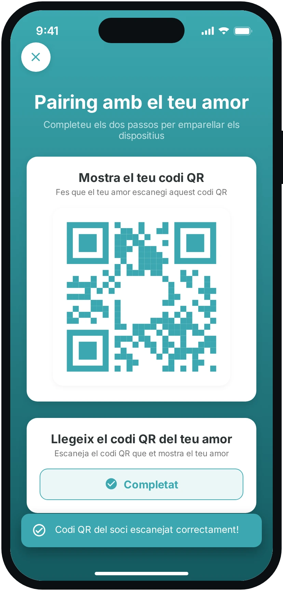
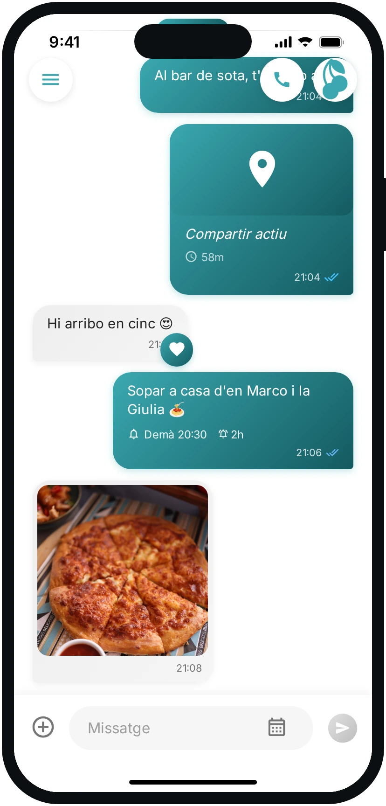
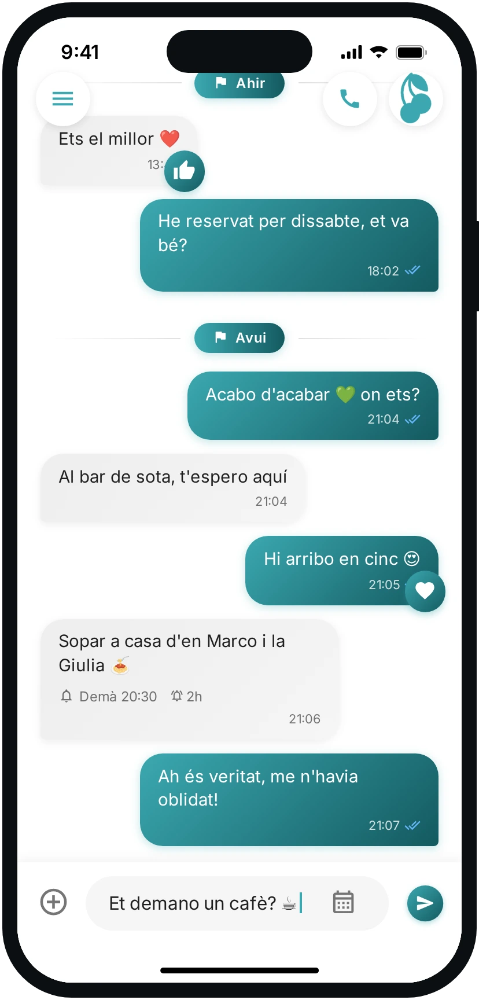
Cada missatge es xifra al teu mòbil i només es torna a obrir al seu. Una sola conversa, que no es perd enmig d'altres vint.
El sopar de divendres, el tren per reservar, les flors per a la seva mare: un recordatori amb data i hora apareix al xat de tots dos, i una hora abans us avisa als dos.
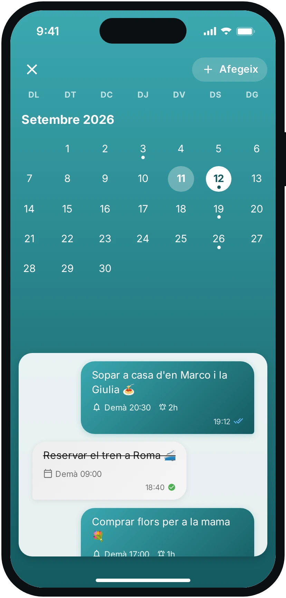
Les fotos, els vídeos, els enllaços i els documents que us heu enviat es recullen mes a mes. S'ha acabat buscar enrere aquella foto d'agost.
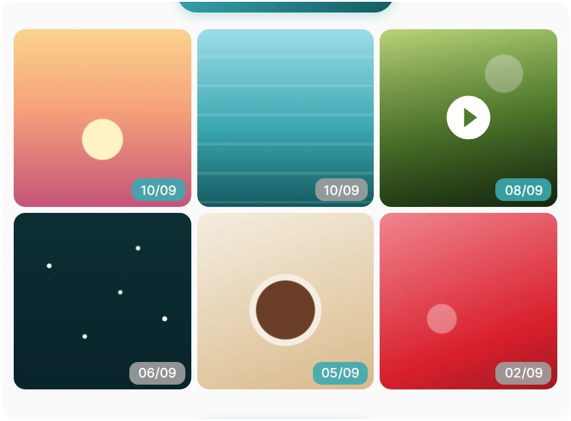
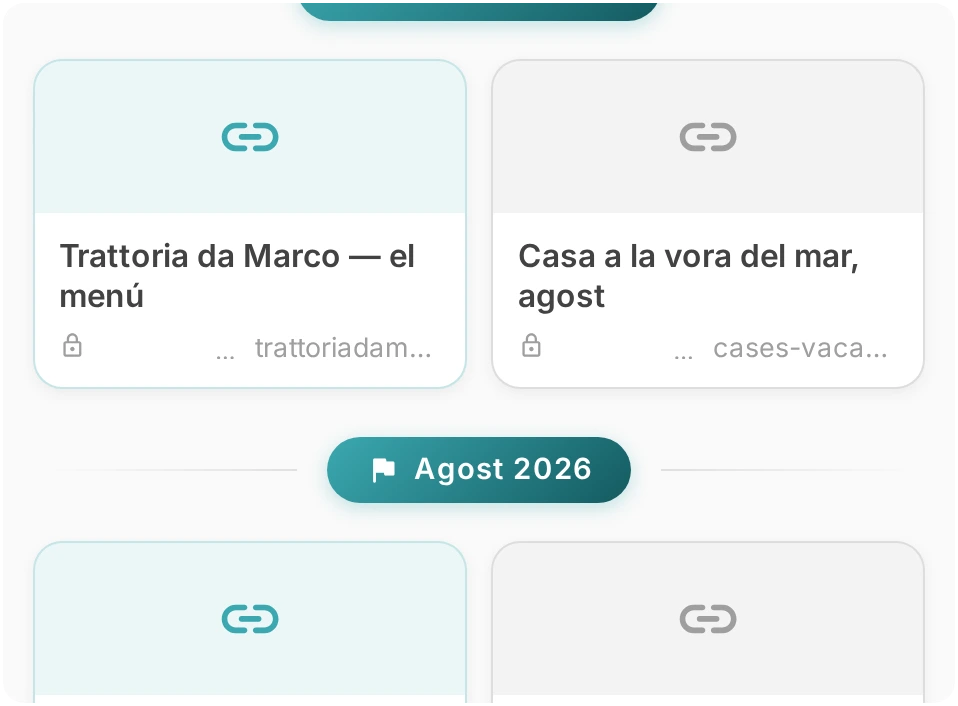
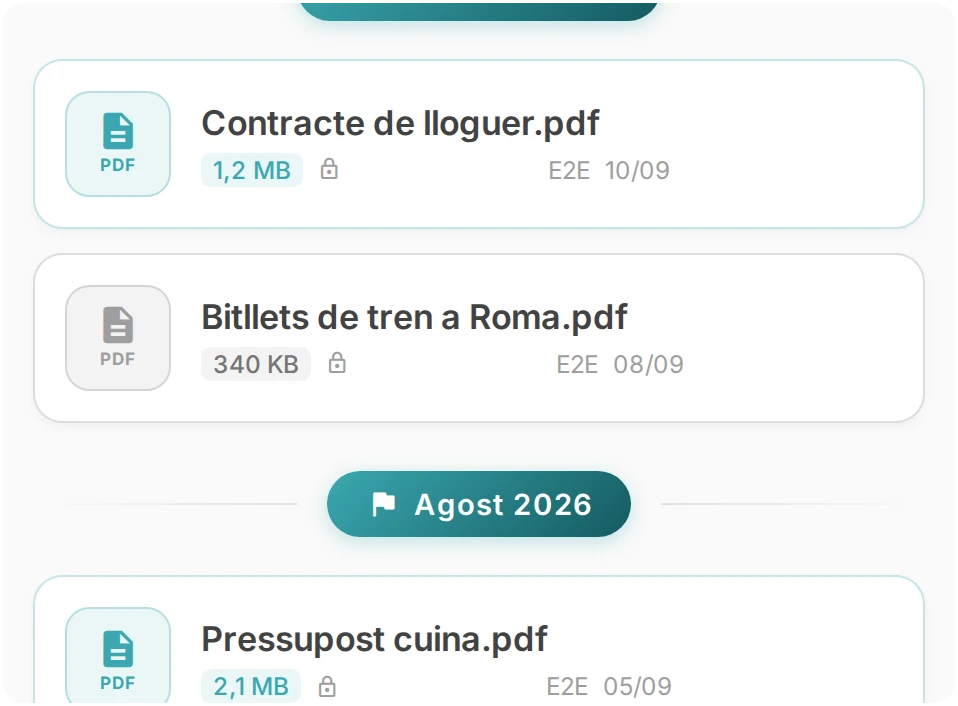
L'auricular és dins el xat: un toc i surt la trucada, peer-to-peer, directa d'un mòbil a l'altre.
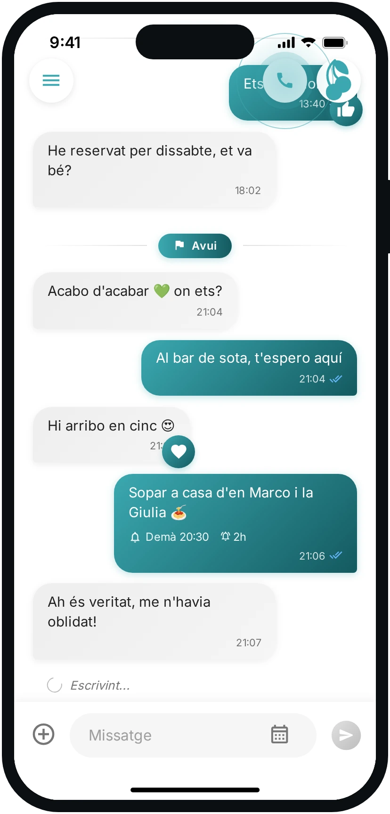
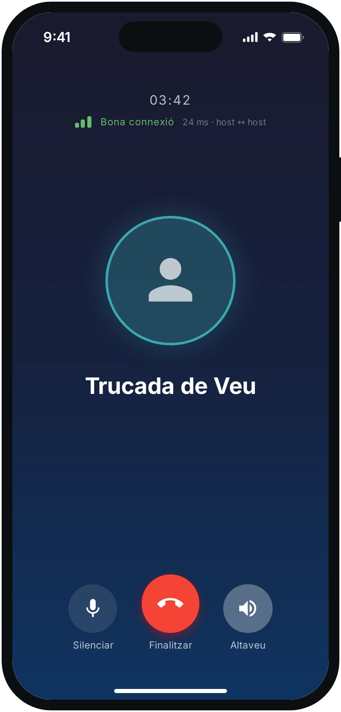
No és una promesa comercial: és com està feta l'app.
La clau privada neix al dispositiu al primer inici i no en surt mai. No arriba als nostres servidors, així que no es pot lliurar a ningú.
Cada missatge fa servir una clau AES-256 d'un sol ús, tancada al seu torn amb la clau pública dels dos dispositius.
Pel núvol hi circula text il·legible. Les coordenades de la ubicació també viatgen xifrades i la sessió caduca sola.
RSA-2048 + AES-256 · sense compte i sense número de telèfon · zero-knowledge
A l'iPhone des de l'App Store i a Android des de Google Play. La interfície està disponible en català, italià, anglès i castellà.
No. No hi ha registre: els dos mòbils es reconeixen intercanviant les claus públiques amb un codi QR, i des d'aquell moment la conversa només existeix entre ells.
Les coordenades es xifren amb una clau dedicada a la sessió, que dura una o vuit hores i després caduca. Al servidor no hi queda cap ubicació llegible.
No, i és una decisió de disseny: un dispositiu s'aparella amb un altre dispositiu. No hi ha grups ni agenda.
Sí. Al mòbil nou obre Configuració → Recupera els missatges i tria d'on: del mòbil de la parella o del teu mòbil antic. El nou mostra un QR que val deu minuts, l'altre l'escaneja des de Configuració → Ajuda la teva parella (o Transfereix), i el certificat arriba xifrat només per a aquell dispositiu: el xat es recompon sol.
A Configuració → Suprimeix els missatges, amb tres nivells: només d'aquest mòbil, només del mòbil de la parella, o de tots dos i també del servidor. Els dos primers deixen el xat al servidor, així que en tornar-vos a aparellar torna; l'últim és irreversible.